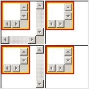
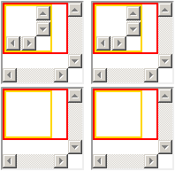
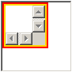

RX9009: 各浏览器中 IFRAME 元素的 scrolling 属性与其子页面 HTML 与 BODY 元素 'overflow' 特性的制约关系有差异
标准参考
根据 HTML4.01 规范中的描述，FRAME 元素与 IFRAME 元素拥有一个特殊的属性 "scrolling"，这个属性为框架窗口指定滚动信息，可能值：
- auto：默认值，告诉用户端在必要时为框架窗口提供滚动设备；
- yes：告诉用户端始终为框架窗口提供滚动设备；
- no：告诉用户端不为框架窗口提供滚动设备。
然而规范中并没有说明此属性与框架引入的子页面中的 HTML 元素或是 BODY 元素通过 CSS 的 'overflow' 特性生成的滚动条之间的制约关系。
关于 scrolling 属性的详细信息，请参考 HTML4.01 规范 16.2.2 The FRAME element 中的内容。
问题描述
在 IE Chrome Safari 中，IFRAME 元素引入的子页面 HTML 元素的 "overflow:hidden" 会使 IFRAME 元素的 scrolling 属性失效，IFRAME 元素不会出现滚动条。
在 Chrome Safari 中，虽然 IFRAME 元素的 scrolling 属性为 "no"，但若其子页面的 HTML 或 BODY 元素的 'overflow' 特性为 'scroll'，则 IFRAME 仍会被渲染上滚动条。
造成的影响
各浏览器 IFRAME 元素的 scrolling 属性与其子页面 HTML 与 BODY 元素 'overflow' 特性的制约关系上的差异，可能造成子页面滚动条的渲染差异。
受影响的浏览器
| 所有浏览器 |
|---|
问题分析
首先观察子页面 HTML 与 BODY 元素为 "overflow:scroll" 时的情况。
分析以下代码：
parent_scroll.html
<!DOCTYPE html> <iframe src="sub1.htm" scrolling="yes" style="width:80px; height:80px;"></iframe> <iframe src="sub1.htm" scrolling="no" style="width:80px; height:80px;"></iframe> <br /> <iframe src="sub2.htm" scrolling="yes" style="width:80px; height:80px;"></iframe> <iframe src="sub2.htm" scrolling="no" style="width:80px; height:80px;"></iframe>
sub1.htm
<!DOCTYPE html> <html style="overflow:scroll; border:2px solid red;"> <body style="overflow:scroll; border:2px solid gold; margin:0; width:50px; height:50px;"> </body> </html>
sub2.htm
<!DOCTYPE html>
<html style="border:2px solid red;">
<body style="overflow:scroll; border:2px solid gold; margin:0; width:50px; height:50px;">
</body>
</html>
主页面中包含两组共四个 IFRAME 元素，每组内 scrolling 属性值分别为 "yes"、"no"。子页面 sub1.htm 中的 HTML 与 BODY 元素的 'overflow' 特性均为 'scroll'。子页面 sub2.htm 中的 BODY 元素的 'overflow' 特性为 'scroll'。对于 IE6(Q) IE7(Q) IE8(Q) 混杂模式的根元素不是 HTML 造成的特殊效果这里不再分析。
在各浏览器中效果如下：
| IE7(S) | IE8(S) Firefox Opera | Chrome Safari |
|---|---|---|
|  |  |
 |
在分析上面一组截图前，先在各浏览器下单独运行 sub2.htm，可知：
- 在 IE7(S) 中，HTML 元素的 'overflow' 特性默认值为 'scroll'，所以默认即会出现页面滚动条。BODY 元素的"overflow:scroll" 生成的滚动条与页面滚动条无关；
- 在 IE8(S) Firefox Chrome Safari Opera 中，在 HTML 元素的 'overflow' 特性为 'visible' 时，BODY 元素的 "overflow:scroll" 生成的滚动条即作为页面的滚动条。
回到上面的测试代码，可见：
- 在 IE8(S) Firefox Opera 中，scrolling 属性为 "no" 会干扰其子页面的页面滚动条的生成，即使 HTML 元素的 'overflow' 特性失效，或 HTML 元素 overflow:visible 时 BODY 元素的 'overflow' 特性失效；
- 在 IE7(S) 中，虽视觉效果与上面的浏览器有区别，但 scrolling 属性的干扰效果一致，只是仅仅使 HTML 元素的 'overflow' 特性失效；
- 在 Chrome Safari 中，scrolling 属性为 "no" 不会对子页面中 HTML 及 BODY 元素的 'overflow' 特性有影响。
下面继续观察子页面 HTML 与 BODY 元素为 "overflow:hidden" 时的情况。
分析以下代码：
parent_hidden.html
<!DOCTYPE html>
<iframe src="sub.htm" scrolling="yes" style="width:80px; height:80px;"></iframe>
sub.htm
<!DOCTYPE html>
<html style="overflow:hidden; border:2px solid red;">
<body style="overflow:scroll; border:2px solid gold; margin:0; width:50px; height:50px;">
</body>
</html>
主页面 IFRAME 元素的 scrolling 属性值为 "yes"。子页面的 HTML 与 BODY 元素的 'overflow' 特性分别为 'hidden' 与 'scroll'。
在各浏览器中效果如下：
| IE7(S) | IE8(S) Firefox Opera | Chrome Safari |
|---|---|---|
|  |  |
 |
仍然忽略 IE6 IE7 中的特殊现象，仅从 scrolling 属性对滚动条的影响上看，
- 在 IE Chrome Safari 中，虽然 IFRAME 的 scrolling 属性值为 "yes"，但是子页面 HTML 元素的 "overflow:hidden" 使 IFRAME 的滚动条消失；
- 在 Firefox Opera 中，由 IFRAME 的 scrolling 属性生成的子页面滚动条并没有受到 HTML 元素的 "overflow:hidden" 的影响。
总结：
- 在 Chrome Safari 中，IFRAME 元素的 scrolling 属性仅影响其引入子页面的 HTML 元素 'overflow' 为 'visible'，或者 HTML 与 BODY 元素 'overflow' 均为 'visible' 时的子页面滚动条。若为子页面 HTML 与 BODY 元素单独设置其 'overflow' 特性，则会很容易地打破 scrolling 属性对子页面滚动条的约束。
- 在 Firefox Opera 中，IFRAME 元素的 scrolling 属性会影响其引入子页面的 HTML 元素 'overflow' 特性，以及 HTML 元素 'overflow' 为 'visible' 时 BODY 元素的 'overflow' 特性，若为子页面 HTML 与 BODY 元素单独设置其 'overflow' 特性，则不会破坏由 scrolling 属性生成及隐藏的子页面滚动条。
- 在 IE 中当子页面的 HTML 元素 'overflow' 为 'hidden' 时，则表现得类似 Chrome 中的情况。当其 'overflow' 为其他值时，则表现得类似 Firefox 中的情况。
解决方案
W3C 规范并没有说明 scrolling 属性应该控制子页面哪个元素的滚动条的生成或者 'overflow' 特性，为防止在某些情况下 Chrome Safari 的 IFRAME 子页面中出现多余滚动条，应避免为 HTML 或者 BODY 元素设置 overflow:scroll。
参见
知识库
相关问题
测试环境
| 操作系统版本: | Windows 7 Ultimate build 7600 |
|---|---|
| 浏览器版本: |
IE6 IE7 IE8 Firefox 3.6.2 Chrome 5.0.360.0 dev Safari 4.0.5 Opera 10.51 |
| 测试页面: | parent_scroll.html parent_hidden.html |
| 本文更新时间: | 2010-06-24 |
关键字
IFRAME scrolling html body overflow 滚动条